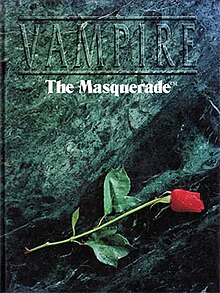
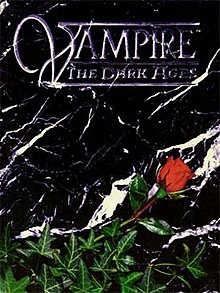
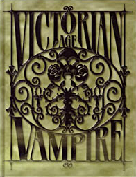
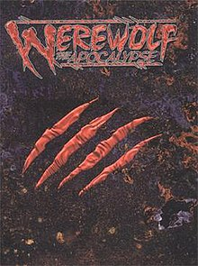
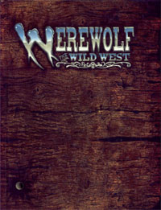
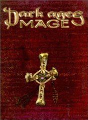
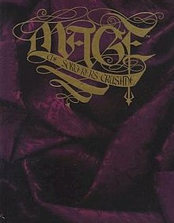
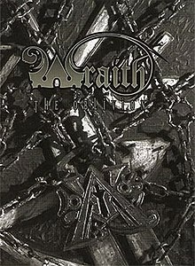

Set in a fictionalized "gothic-punk" version of the modern world, who are referred to as "Kindred" and deal with their night-to-night struggles against their own bestial natures, vampire hunters, and each other. The vampires were given an extensive list of broad supernatural powers called disciplines.

Set in medieval Europe in 1197 to 1242. Players take the roles of vampires, who believe themselves to have descended from the biblical Caine, the first murderer. Each vampire belongs to one of thirteen clans with different vampiric powers and weaknesses, and with different relationships with other clans.

Set in 1880-1897, with a focus on Europe. At this point in the setting, vampires no longer openly lord over humans, and live in hiding in cities and the countryside. Humans still have a remnant of belief in vampires: the notion of their existence is considered absurd in some circles, who still fear for vampires at night.

Set in a fictionalized "gothic-punk" version of the modern world "Gothic-Punk."
The player characters are Garou, or werewolves, who have undergone some training and succeeded in a rite of passage. This setting is a dark reflection of the real world filled with corruption, apathy, violence, and hopelessness.
Set in medieval Europe in 1197 to 1242, as well as Vampire: The Dark Ages. The 10 tribes of Garou once raged across the Dark Medieval, secure that none could challenge their power. They defended their sacred places without fear of man, Cainite or beast.

Set in the American West. It is referred to as the Savage West to indicate it is generally darker and grittier than the history of our own world. All 13 Garou tribes almost identical to their modern counterparts. The three tribes that are most different from their modern incarnations are the Uktena, Wendigo, and Glass Walkers.
Reality is not fixed, but rather a set of agreed upon assumptions enforced by the collective will of humanity, the Sleepers. Mages are those people who recognize that reality is not static, and realize that through the application of their will, usually channeled through rituals or other similar "mystical" or "scientific" practices, reality can be changed.

It is a wildly different system from the modern counterpart, as Paradox has not quite taken hold. Because the consensus of reality is less powerful, magic itself is more bold. Rather than magic commonly being explained away by coincidence, it is often obviously the working of some powerful being.

Set around the time of the founding of the Council of Nine Mystic Traditions in 1466 CE. The renaissance is bringing the dawn of a new age, an age in which Science and Reason begin to dominate over the mysticism and superstition of old, The forces of magic, religion, and science... all competing in the mindspace of humanity.

Characters in Wraith are the spirits of the dead who have not been able to make peace with their pasts and Transcend. This game uses several rules which are unique to the system and require advanced players, particularly the Shadow, which requires that each player in the troupe play as an antagonist to another player.